01. DASHBOARD
Análisis del Perfil del Proceso de Educación¶
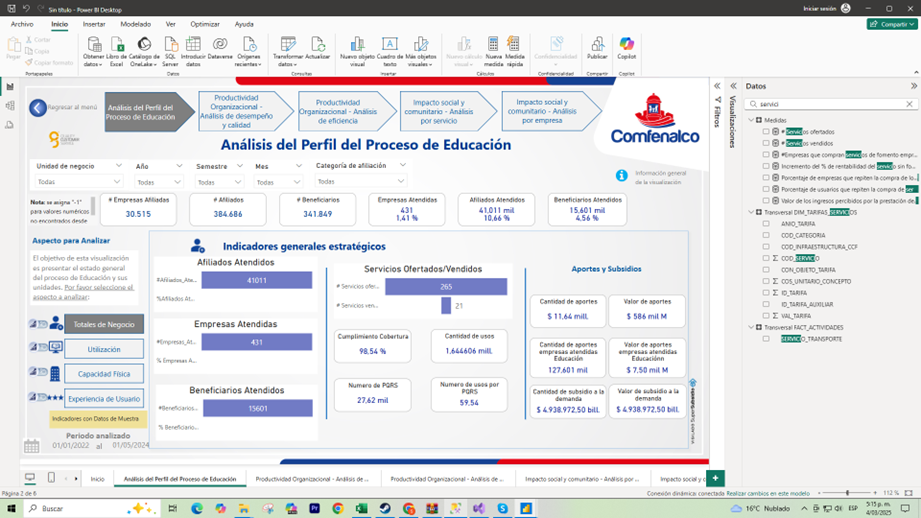
Objetivo de la Visualización:
Proporcionar una visión integral del proceso de Educación, resaltando indicadores estratégicos y datos clave sobre el estado actual de cada unidad de negocio. Con esta vista se busca facilitar la toma de decisiones y el monitoreo de aspectos relevantes, como el número de empresas atendidas, afiliados, beneficiarios y servicios ofertados o vendidos, así como la relación con aportes y subsidios.
Estructura y Elementos Principales¶
-
Menú Superior de Navegación:
- Incluye secciones para navegar entre distintos análisis estratégicos (por ejemplo, Productividad Organizacional, Impacto Social y Comunitario, etc.).
- Permite al usuario cambiar fácilmente de una perspectiva a otra sin salir de la vista principal.
-
Panel Lateral Izquierdo:
- Contiene opciones para profundizar en aspectos clave del proceso de Educación, tales como:
- Unidades de Negocio: Permite filtrar o seleccionar la unidad específica a analizar.
- Totales de Negocio: Proporciona un resumen de datos agregados (por ejemplo, ingresos totales, servicios totales, etc.).
- Utilización: Muestra información relacionada con el uso de servicios o recursos.
- Capacidad Física: Indica la disponibilidad o capacidad instalada en la infraestructura de educación.
- Experiencia de Usuario: Brinda información sobre la satisfacción o percepciones de los beneficiarios.
-
Zona Central de Indicadores Generales Estratégicos:
- Presenta métricas relevantes del proceso de Educación, como:
- Empresas Atendidas: Número total de organizaciones que han recibido servicios de la institución.
- Afiliados Atendidos: Cantidad de afiliados que han accedido a servicios de educación.
- Beneficiarios Atendidos: Personas que se han beneficiado directa o indirectamente de los servicios ofertados.
- Servicios Ofertados / Vendidos: Comparación entre la cantidad de servicios disponibles y los efectivamente vendidos o prestados.
- Aportes y Subsidios: Información sobre la financiación y subsidios asignados, con indicadores de valor total y cobertura.
-
Visualizaciones de Datos y Tablas de Resumen:
- Gráficos de barras, líneas o tarjetas numéricas que facilitan la lectura de los KPIs (Indicadores Clave de Desempeño).
- Tablas dinámicas que muestran información detallada y permiten realizar comparaciones rápidas.
-
Filtros y Segmentaciones (Slicers):
- Ubicados normalmente en la parte derecha o superior, ayudan a refinar la información por períodos de tiempo, tipo de servicio, unidad de negocio, etc.
- Aportan interactividad, permitiendo que los gráficos y tablas se actualicen en tiempo real según las selecciones del usuario.
Funcionalidades Clave¶
-
Interactividad:
Al seleccionar un filtro o hacer clic en un elemento específico (por ejemplo, una categoría de servicio), el resto de visualizaciones se ajusta automáticamente para mostrar datos relevantes a esa selección. -
Análisis Comparativo:
Permite comparar períodos (por ejemplo, mes actual vs. mes anterior) o tipos de servicios (Educación Formal vs. Educación para el Trabajo), brindando una perspectiva más completa de la evolución y el desempeño. -
Insights Rápidos:
Los indicadores principales se encuentran en la parte más visible de la pantalla, lo que facilita la identificación de tendencias, alertas o áreas que requieran atención inmediata. -
Drill-down / Drill-through:
Algunas visualizaciones pueden ofrecer la posibilidad de profundizar en niveles de detalle (por ejemplo, de la vista general de servicios ofertados a un desglose por categoría o por población atendida).
Análisis del Perfil del Proceso de Educación - Indicadores de Utilización¶
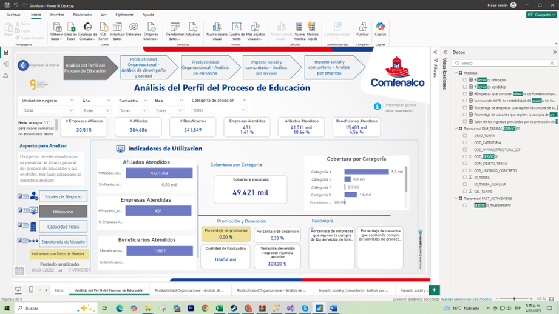
Objetivo de la Visualización:
Proporcionar una perspectiva detallada de la utilización de los servicios educativos, abarcando el número de afiliados, empresas y beneficiarios atendidos, así como la cobertura de dichos servicios por categoría. Además, se destacan datos sobre promoción, deserción y la recuperación de afiliados, permitiendo a los usuarios comprender la efectividad y alcance de las acciones emprendidas en el proceso de Educación.
Estructura y Elementos Principales¶
-
Menú Superior de Navegación:
- Permite desplazarse entre distintos análisis estratégicos relacionados con la Productividad Organizacional y el Impacto Social y Comunitario.
- Facilita el cambio de vista sin perder el contexto de los datos.
-
Panel Lateral Izquierdo:
- Contiene las secciones que agrupan los aspectos a analizar (p. ej., Unidades de Negocio, Totales de Negocio, Utilización, Capacidad Física, Experiencia de Usuario).
- Permite filtrar la información según la necesidad de cada usuario, enfocándose en indicadores de utilización o profundizando en otros aspectos como la capacidad instalada o la percepción de los usuarios.
-
Zona Central - Indicadores de Utilización:
- Afiliados Atendidos: Muestra la cantidad de afiliados que han utilizado los servicios de educación en el período seleccionado.
- Empresas Atendidas: Indica el número de organizaciones que han participado o se han beneficiado de los servicios.
- Beneficiarios Atendidos: Refleja cuántas personas han recibido directa o indirectamente servicios educativos.
- Cobertura por Categoría: Destaca cuántas personas de cada categoría (A, B, C, etc.) han sido atendidas o están cubiertas por los programas educativos.
- Promoción y Deserción: Señala la tasa de usuarios que avanzan en sus procesos formativos (promoción) o que abandonan (deserción).
- Recupera: Podría referirse a la tasa de reenganche o recaptura de usuarios que, tras desertar, regresan a los programas educativos.
-
Panel Inferior o Sección de Detalle (si aplica):
- Puede incluir gráficas de tendencia o tablas que profundizan en la distribución de usuarios por categorías, periodos de tiempo, ubicación geográfica u otras variables de interés.
-
Filtros y Segmentaciones (Slicers):
- Permiten ajustar la vista por rangos de fechas, tipos de servicios, niveles de educación u otras clasificaciones internas de la organización.
- La actualización de la información en tiempo real facilita el análisis comparativo y la toma de decisiones ágiles.
Funcionalidades Clave¶
-
Interactividad:
Cada elemento (gráfico, tarjeta, tabla) responde a las selecciones de filtros, ofreciendo una visión personalizada y ajustada a las necesidades del analista. -
Comparaciones Temporales:
Posibilidad de comparar indicadores (p. ej., número de beneficiarios, cobertura por categoría) en diferentes periodos, para identificar tendencias de crecimiento o disminución. -
Enfoque en el Usuario:
Métricas como Promoción, Deserción y Recupera se centran en la experiencia y trayectoria de los afiliados, ayudando a la organización a entender el grado de éxito y las áreas de oportunidad en los programas educativos. -
Desglose y Profundización (Drill-down):
Permite explorar los datos a mayor detalle, segmentando por unidades de negocio, zonas geográficas, categorías de usuarios, etc.
Análisis del Perfil del Proceso de Educación – Indicadores de Capacidad¶
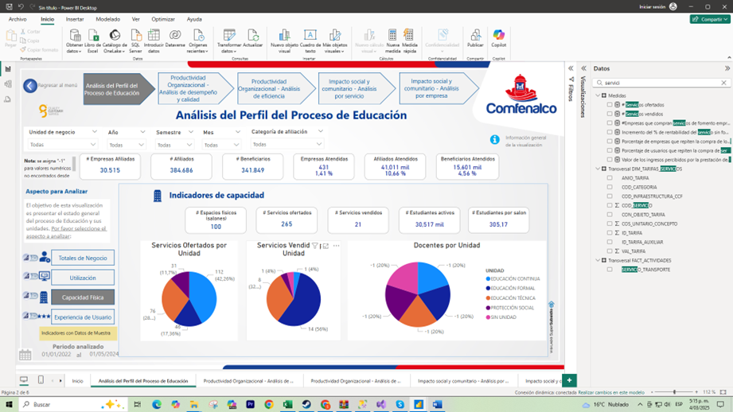
Objetivo de la Visualización:
Mostrar de manera clara y concisa la capacidad de prestación del proceso de Educación, a través de la comparación entre servicios ofertados y vendidos, así como la distribución de docentes por unidad. Con esta información, se busca entender el nivel de disponibilidad de recursos (humanos y de servicios) y su efectividad en términos de comercialización y alcance.
Estructura y Elementos Principales¶
-
Menú Superior de Navegación:
- Proporciona acceso a los distintos módulos de análisis (por ejemplo, Productividad Organizacional, Impacto Social y Comunitario), permitiendo un cambio fluido entre vistas sin perder el contexto de la información.
-
Panel Lateral Izquierdo:
- Incluye opciones para analizar diferentes aspectos del proceso educativo, como Totales de Negocio, Utilización, Capacidad Física y Experiencia de Usuario.
- Facilita la selección de la unidad de negocio o el tipo de indicador que se desea visualizar, ofreciendo una experiencia personalizada al usuario.
-
Zona Central – Indicadores de Capacidad:
- Servicios Ofertados por Unidad: Muestra, en formato gráfico (por ejemplo, gráfico circular o de barras), la proporción de servicios que cada unidad ofrece dentro del proceso de Educación.
- Servicios Vendidos por Unidad: Refleja cuántos de esos servicios ofertados se concretaron en ventas efectivas, permitiendo medir el éxito comercial o la demanda real.
- Docentes por Unidad: Indica la cantidad y/o proporción de docentes asignados a cada unidad, brindando una visión de la distribución de recursos humanos.
- Indicadores Numéricos Clave: Se pueden incluir tarjetas que destaquen totales globales (e.g., total de servicios ofertados, vendidos, docentes disponibles), ofreciendo una referencia rápida del estado actual de la capacidad.
-
Panel Inferior o Sección de Detalle (opcional):
- Puede contener tablas dinámicas o gráficos complementarios que permitan un análisis más granular de los datos (por ejemplo, evolución histórica de servicios ofertados vs. vendidos, categorización de docentes por especialidad, etc.).
-
Filtros y Segmentaciones (Slicers):
- Ubicados normalmente a la derecha o en la parte superior, ofrecen la posibilidad de filtrar por fechas, tipos de servicios, categorías de unidades de negocio u otras variables relevantes.
- Actualizan de forma interactiva los gráficos y tablas, facilitando el análisis comparativo y la toma de decisiones informada.
Funcionalidades Clave¶
-
Comparación Oferta vs. Venta:
Permite identificar la efectividad de cada unidad en convertir su oferta de servicios en ventas reales, aportando insights sobre posibles brechas o excedentes de capacidad. -
Distribución de Recursos Humanos:
El indicador de docentes por unidad ofrece una visión clara de cómo se reparten los recursos humanos a lo largo de las diferentes áreas, y si existen desequilibrios que requieran ajuste. -
Análisis Interactivo y Dinámico:
Los usuarios pueden profundizar en áreas específicas mediante la selección de filtros, obteniendo información segmentada por periodos de tiempo, tipo de programa, población objetivo, etc. -
Seguimiento de Tendencias:
Al combinar los datos de capacidad con otros indicadores (como la experiencia de usuario o la rentabilidad), se puede hacer un seguimiento de tendencias y detectar oportunidades de mejora continua.
Análisis del Perfil del Proceso de Educación – Experiencia de Usuario¶
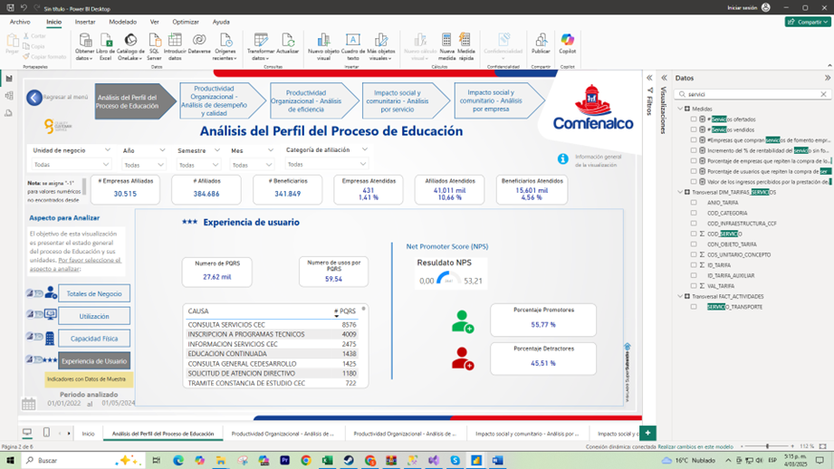
Objetivo de la Visualización:
Ofrecer una perspectiva integral de la satisfacción y experiencia de los usuarios dentro del proceso de Educación, a través de indicadores clave como el Net Promoter Score (NPS), tiempo de resolución y principales causas de insatisfacción o incidencias. De esta forma, se busca identificar áreas de mejora y reforzar aquellas estrategias que promuevan una experiencia positiva.
Estructura y Elementos Principales¶
-
Menú Superior de Navegación:
- Permite el acceso a diferentes módulos de análisis (Productividad Organizacional, Impacto Social y Comunitario, etc.), facilitando el cambio de vista sin salir del contexto general.
-
Panel Lateral Izquierdo:
- Incluye las secciones para profundizar en Totales de Negocio, Utilización, Capacidad Física y Experiencia de Usuario.
- Ayuda a filtrar o segmentar la información según las necesidades del usuario, enfocándose en la experiencia y percepción de los beneficiarios.
-
Zona Central – Indicadores de Experiencia de Usuario:
- Net Promoter Score (NPS): Mide la disposición de los usuarios a recomendar los servicios de la organización.
- Resolución Promedio (en Días o Horas): Refleja el tiempo que se tarda en dar solución a solicitudes, quejas o inquietudes de los usuarios.
- Porcentaje de Promotores y Detractores: Muestra la proporción de usuarios altamente satisfechos (promotores) frente a quienes presentan una experiencia negativa (detractores).
- Causas Principales: Se listan las razones o temas que generan mayor insatisfacción o requerimientos (por ejemplo, demoras en procesos, problemas de sincronía, etc.), lo que permite focalizar acciones correctivas.
-
Visualizaciones Clave (Tarjetas y Gráficos):
- Tarjetas de KPI: Presentan de forma resumida el valor de NPS, el tiempo de resolución y otros indicadores críticos para la experiencia del usuario.
- Tabla de Causas: Detalla las principales categorías de reclamos o incidencias, acompañadas de su frecuencia o relevancia.
-
Filtros y Segmentaciones (Slicers):
- Ubicados en la parte derecha o superior, permiten filtrar por período, tipo de servicio o unidad de negocio.
- La interactividad hace posible analizar rápidamente las variaciones en el NPS o en las causas de insatisfacción para diferentes segmentos de usuarios.
Funcionalidades Clave¶
-
Seguimiento del NPS en Tiempo Real:
Permite monitorear la evolución del índice de satisfacción y detectar tendencias positivas o negativas de manera oportuna. -
Análisis de Causas Raíz:
La tabla con las principales causas de insatisfacción facilita la priorización de acciones correctivas, optimizando los recursos y esfuerzos para mejorar la experiencia del usuario. -
Comparaciones Temporales y Segmentadas:
Filtrar por fechas o categorías de usuarios (afiliados, beneficiarios, empresas) posibilita la identificación de patrones específicos y la evaluación de estrategias de mejora. -
Enfoque en la Resolución de Problemas:
El indicador de tiempo promedio de resolución ayuda a medir la eficiencia de los procesos de atención y a establecer metas de mejora continua.
Productividad Organizacional – Análisis de Desempeño y Calidad¶
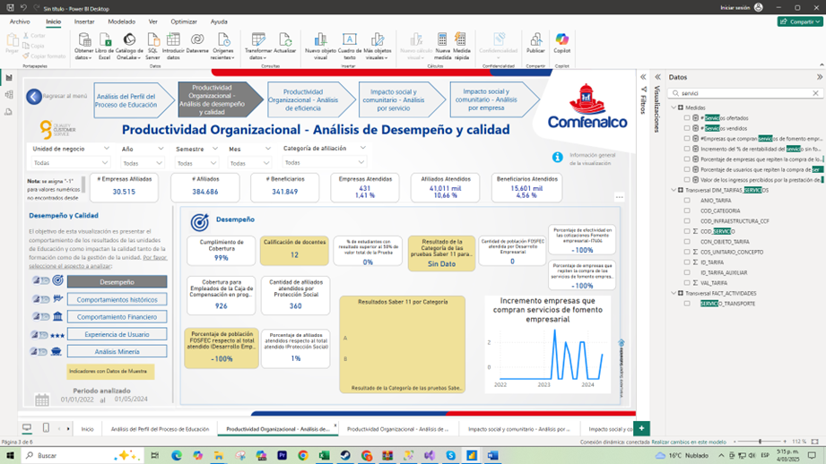
Objetivo de la Visualización:
Presentar el comportamiento de los resultados de las unidades de Educación y su impacto en la calidad de la formación y de la gestión organizacional. Con esta vista, se busca ofrecer indicadores clave de desempeño, satisfacción y eficiencia que permitan a los responsables de área y directivos tomar decisiones basadas en datos y orientar acciones de mejora continua.
Estructura y Elementos Principales¶
-
Menú Superior de Navegación:
- Permite cambiar entre diferentes análisis estratégicos (p. ej., Desempeño, Eficiencia, Experiencia de Usuario, etc.).
- Facilita el acceso a módulos específicos de la plataforma, brindando una visión integral de la productividad organizacional.
-
Panel Lateral Izquierdo – Opciones de Análisis:
- Desempeño: Ofrece una visión general del cumplimiento de metas y objetivos, así como métricas de productividad.
- Comportamientos Históricos: Permite revisar tendencias a lo largo del tiempo, como la evolución de indicadores de calidad o niveles de asistencia.
- Comportamiento Financiero: Se centra en la rentabilidad y los costos asociados a la operación educativa, relacionando la inversión con los resultados obtenidos.
- Experiencia de Usuario: Profundiza en la satisfacción y percepción de los beneficiarios, incluyendo aspectos como NPS, tiempos de respuesta y retroalimentación de usuarios.
- Análisis Minería: Proporciona herramientas de análisis más avanzado (por ejemplo, minería de datos) para descubrir patrones ocultos o correlaciones relevantes.
-
Zona Central – Indicadores de Desempeño y Calidad:
- Empresas Atendidas, Afiliados Atendidos, Beneficiarios Atendidos: KPI que reflejan el alcance de los servicios educativos y la cobertura lograda en el período analizado.
- Calificación de Satisfacción: Mide la percepción de calidad de los programas, habitualmente en una escala (por ejemplo, 8,5/10).
- Resultados Sede / Tasa de Certificación / Tasa de Deserción: Indicadores específicos que evalúan la eficacia formativa y la permanencia de los estudiantes en los programas.
- Incremento de Empresas que Compran el Servicio: Refleja el crecimiento en la demanda de los servicios de educación por parte de empresas afiliadas o externas.
-
Visualizaciones Clave:
- Gráficos de Barras o Líneas: Comparan periodos o muestran la evolución de un indicador (e.g., empresas atendidas a lo largo del año).
- Tarjetas de KPI: Destacan métricas principales (e.g., calificación promedio, porcentaje de cumplimiento de metas).
- Tablas de Detalle: Pueden presentar información más granular sobre las unidades, sedes o programas específicos.
-
Sección de Filtros y Segmentaciones (Slicers):
- Permiten ajustar el análisis por fecha, tipo de programa, región, categoría de beneficiarios u otras variables relevantes.
- Habilitan la personalización de la información mostrada y el análisis comparativo entre diferentes segmentos.
Funcionalidades Clave¶
-
Monitoreo de Indicadores de Calidad:
La vista incluye métricas de satisfacción, certificación y deserción, proporcionando una imagen clara de la calidad educativa y de gestión. -
Análisis de Tendencias y Comparaciones Temporales:
El usuario puede identificar variaciones positivas o negativas en el desempeño y la calidad, tomando medidas correctivas oportunas. -
Enfoque Integral del Desempeño:
Al abarcar tanto aspectos de formación (ej. calificaciones, deserción) como de gestión (cumplimiento de metas, rentabilidad), se obtiene una visión completa de la productividad organizacional. -
Segmentación Interactiva:
El uso de slicers o filtros hace posible profundizar en datos específicos, como la evolución de la satisfacción por sede o la tasa de certificación en un programa particular.
Productividad Organizacional – Análisis de Desempeño y Calidad (Comportamientos Históricos)¶
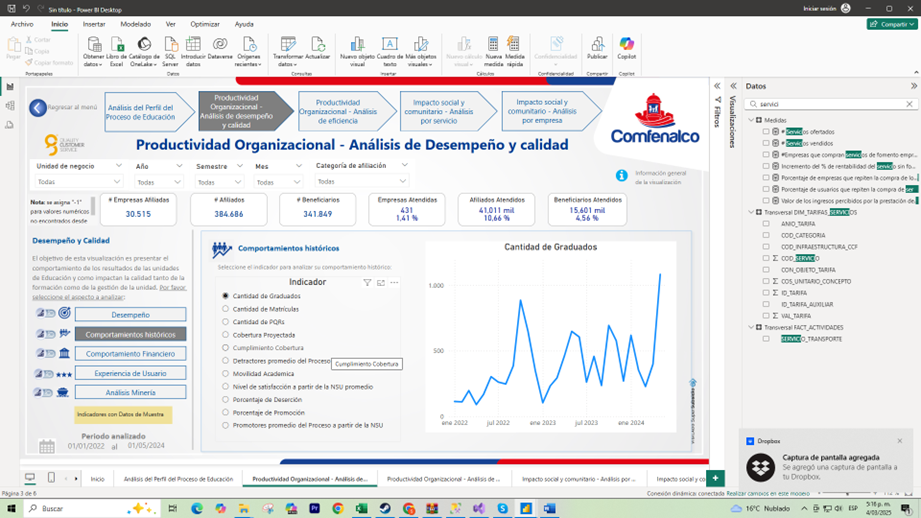
Objetivo de la Visualización:
Proporcionar una visión longitudinal del desempeño de la organización en el ámbito educativo, permitiendo a los usuarios identificar tendencias, picos y patrones a lo largo del tiempo. En particular, se resalta la Cantidad de Graduados y otros indicadores relacionados con la calidad y los resultados de la formación, ofreciendo una base sólida para la toma de decisiones estratégicas.
Estructura y Elementos Principales¶
-
Menú Superior de Navegación:
- Facilita el acceso a las distintas secciones de análisis estratégico (Desempeño, Eficiencia, Experiencia de Usuario, entre otros).
- Mantiene la coherencia con las demás páginas de Productividad Organizacional, permitiendo un recorrido fluido entre perspectivas.
-
Panel Lateral Izquierdo – Opciones de Análisis:
- Desempeño: Muestra indicadores globales de productividad y calidad.
- Comportamientos Históricos: Se centra en la evolución temporal de los KPIs (por ejemplo, graduados, certificaciones, calificaciones).
- Comportamiento Financiero: Profundiza en la rentabilidad y costos asociados a la operación educativa.
- Experiencia de Usuario: Enfatiza la satisfacción y percepción de los beneficiarios a través de indicadores como NPS o tiempos de respuesta.
- Análisis Minería: Integra herramientas de minería de datos para encontrar patrones más complejos.
-
Zona Central – Visualización de Comportamientos Históricos:
- Cantidad de Graduados (Gráfico de Línea): Refleja la evolución del número de graduados en un periodo determinado, permitiendo identificar tendencias, estacionalidades o impactos de políticas específicas.
- Indicadores de Desempeño (Tarjetas o Cuadros Resumen): Incluyen datos agregados de empresas atendidas, afiliados, beneficiarios, y/o tasas de aprobación o deserción.
- Detalle de Indicadores: Puede presentar una tabla o listado con el desglose de cada indicador (e.g., graduados por programa o sede) para un análisis más granular.
-
Panel Inferior o Secundario (opcional):
- Puede mostrar comparaciones temporales adicionales (por ejemplo, variación interanual de graduados, porcentaje de incremento o disminución).
- Incluye filtros que permiten segmentar la información por tipo de programa, unidad de negocio, fecha, entre otros.
-
Slicers y Segmentaciones (Filtros):
- Permiten al usuario ajustar la visualización por rango de fechas, categoría de formación, sede o cualquier otra dimensión relevante.
- La interactividad asegura que los gráficos y tarjetas se actualicen de manera inmediata al seleccionar nuevos criterios.
Funcionalidades Clave¶
-
Análisis de Tendencias:
El gráfico de línea de Cantidad de Graduados facilita la identificación de picos, caídas o comportamientos estacionales, así como el impacto de iniciativas específicas (nuevos programas, becas, subsidios, etc.). -
Comparaciones Temporales:
Con la posibilidad de filtrar por años, semestres o trimestres, el usuario puede observar cómo evolucionan los indicadores en distintos horizontes de tiempo. -
Detalle Interactivo (Drill-down):
Al hacer clic en una serie o punto específico, se puede profundizar en la información (por ejemplo, graduados por programa, por sede o por modalidad). -
Correlación con Otros Indicadores:
El panel puede complementarse con métricas de deserción, tasas de certificación o satisfacción del estudiante para entender cómo cada uno influye en la productividad global.
Productividad Organizacional – Análisis de Desempeño y Calidad (Comportamiento Financiero)¶
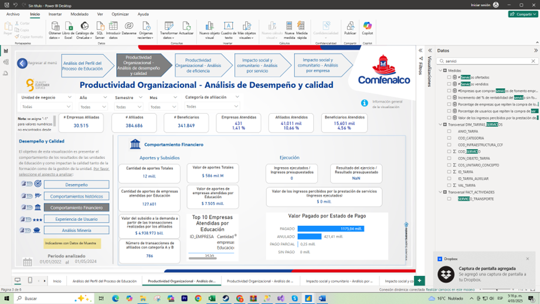
Objetivo de la Visualización:
Ofrecer una perspectiva financiera del proceso de Educación dentro de la organización, destacando el comportamiento de los aportes, subsidios, inversión y ejecución presupuestal. Adicionalmente, se muestran indicadores que permiten identificar las principales fuentes de ingresos (empresas aportantes) y el estado de los pagos realizados, brindando una base sólida para la toma de decisiones estratégicas y el control de la gestión financiera.
Estructura y Elementos Principales¶
-
Menú Superior de Navegación:
- Ubicado en la parte superior, permite alternar entre diferentes módulos de Productividad Organizacional, como Desempeño, Eficiencia, Experiencia de Usuario y otros enfoques estratégicos.
- Facilita el recorrido por distintas perspectivas sin perder el contexto general de la información.
-
Panel Lateral Izquierdo – Opciones de Análisis:
- Desempeño: Muestra la visión global de la productividad y calidad de la educación.
- Comportamientos Históricos: Proporciona la evolución temporal de indicadores clave.
- Comportamiento Financiero: Enfatiza la distribución de aportes, subsidios, ejecución e inversión, así como el estado de pagos y las principales empresas aportantes.
- Experiencia de Usuario: Se enfoca en la percepción y satisfacción de afiliados y beneficiarios.
- Análisis Minería: Profundiza en el análisis de datos, buscando correlaciones y patrones más complejos.
-
Zona Central – Indicadores Financieros Clave:
- Aportes y Subsidios: Refleja los montos y fuentes de financiación que sostienen los programas educativos, así como los subsidios otorgados a los beneficiarios.
- Inversión y Ejecución: Muestra cuánto se ha invertido y el porcentaje de ejecución respecto al presupuesto asignado, permitiendo evaluar la eficiencia del gasto.
- Top 10 Empresas Aportantes: Destaca las principales empresas que contribuyen con recursos, ordenadas por el valor de sus aportes.
- Valor Pagado por Estado de Pago: Visualiza la distribución de los pagos realizados según su estado (aprobado, en proceso, etc.), facilitando el seguimiento y control financiero.
-
Visualizaciones de Apoyo (Gráficos y Tablas):
- Gráficos de Barras o Tartas: Para ilustrar la composición de aportes, subsidios y pagos por estado.
- Tablas Dinámicas: Muestran detalles granulares de inversión, ejecución y contribuciones, permitiendo un análisis más exhaustivo.
-
Filtros y Segmentaciones (Slicers):
- Ubicados en la parte derecha o superior, habilitan la selección de períodos de tiempo, categorías de inversión, tipos de subsidio u otras dimensiones relevantes.
- La actualización de las métricas se produce en tiempo real al cambiar los filtros, aportando una experiencia de análisis dinámico.
Funcionalidades Clave¶
-
Seguimiento de la Ejecución Presupuestal:
Los indicadores de inversión y ejecución permiten evaluar la efectividad en el uso de los recursos, comparando lo presupuestado vs. lo ejecutado. -
Identificación de Principales Aportantes:
La lista de Top 10 Empresas Aportantes facilita la detección de fuentes de financiamiento más relevantes, permitiendo planificar acciones de fidelización o búsqueda de nuevos aportes. -
Control de Pagos y Estado de Cartera:
El desglose del Valor Pagado por Estado de Pago ayuda a supervisar los pagos pendientes, en trámite o completados, reduciendo riesgos financieros. -
Análisis Comparativo y Segmentado:
La posibilidad de filtrar por fechas, unidades de negocio o categorías de servicios aporta flexibilidad para comparar comportamientos financieros en distintos escenarios.
Productividad Organizacional – Análisis de Desempeño y Calidad (Experiencia de Usuario)¶
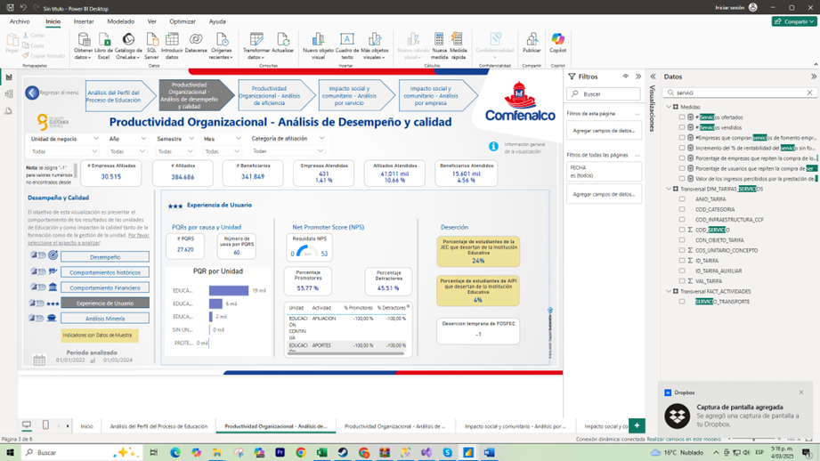
Objetivo de la Visualización:
Brindar una perspectiva clara de la satisfacción y la experiencia de los usuarios dentro de la organización, integrando métricas de Net Promoter Score (NPS), PQR (Peticiones, Quejas y Reclamos) por Unidad y la tasa de Deserción. De esta forma, se pueden identificar oportunidades de mejora y ajustar estrategias para elevar la calidad del servicio y la retención de los beneficiarios.
Estructura y Elementos Principales¶
-
Menú Superior de Navegación:
- Ubicado en la parte superior, permite alternar entre distintas secciones de análisis de Productividad Organizacional (Desempeño, Comportamientos Históricos, Comportamiento Financiero, etc.).
- Garantiza una experiencia de usuario coherente, manteniendo el contexto al cambiar de vista.
-
Panel Lateral Izquierdo – Opciones de Análisis:
- Desempeño: Muestra indicadores globales de productividad y resultados.
- Comportamientos Históricos: Profundiza en la evolución temporal de las métricas clave.
- Comportamiento Financiero: Destaca la asignación de recursos y la rentabilidad.
- Experiencia de Usuario: Se centra en la satisfacción de afiliados, empresas y beneficiarios, incorporando aspectos como el NPS y la gestión de PQR.
- Análisis Minería: Ofrece funciones avanzadas de minería de datos para detectar patrones ocultos.
-
Zona Central – Indicadores de Experiencia de Usuario y Desempeño Asociado:
- PQR por Unidad: Muestra la cantidad de peticiones, quejas y reclamos en cada unidad de negocio, reflejando la incidencia de problemas o inconformidades.
- Net Promoter Score (NPS): Indica la probabilidad de que los usuarios recomienden los servicios, siendo un índice clave de satisfacción.
- Deserción: Expone la tasa de usuarios que abandonan el proceso formativo, proporcionando señales sobre la efectividad de los programas y la retención de beneficiarios.
- Indicadores de Satisfacción y Resolución: Puede incluir métricas como el tiempo promedio de resolución de PQR o la satisfacción post-resolución.
-
Visualizaciones Clave (Gráficos y Tarjetas):
- Tarjetas de KPI: Resumen valores principales de NPS, PQR y deserción, facilitando la lectura rápida de los resultados.
- Gráficos de Barras o Líneas: Comparan las PQR entre distintas unidades o muestran la tendencia del NPS y la deserción a lo largo del tiempo.
- Tablas Dinámicas: Permiten ver detalles sobre las causas de PQR, segmentación de la deserción o la composición de los promotores/detractores.
-
Slicers y Filtros:
- Ubicados a la derecha o en la parte superior, posibilitan filtrar por períodos, tipos de servicio, unidades de negocio, entre otros criterios.
- Actualizan de manera dinámica los gráficos y tarjetas, habilitando análisis focalizados y comparativos.
Funcionalidades Clave¶
-
Integración de PQR y NPS:
Combinar la gestión de peticiones, quejas y reclamos con el Net Promoter Score ofrece una visión más completa de la experiencia de usuario, abarcando tanto los incidentes reportados como la percepción general del servicio. -
Enfoque en la Retención (Deserción):
Al mostrar la tasa de deserción, se pueden identificar patrones que expliquen el abandono de los programas y planificar acciones de fidelización o mejora en la formación. -
Segmentación Interactiva:
Permite filtrar datos por unidad de negocio, rango de fechas o categoría de usuario, adaptando el análisis a necesidades específicas. -
Comparación Histórica:
Posibilita evaluar la evolución de indicadores (por ejemplo, la reducción de PQR o el aumento del NPS) tras la implementación de nuevas políticas o mejoras en el servicio.
Productividad Organizacional – Análisis de Desempeño y Calidad (Análisis Minería)¶
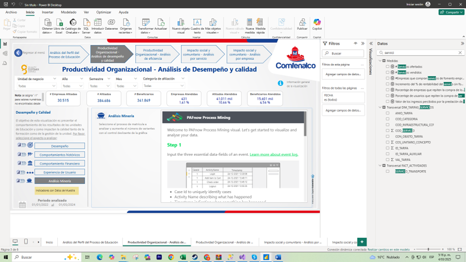
Objetivo de la Visualización:
Integrar técnicas de Process Mining para profundizar en la secuencia y eficiencia de los procesos educativos y administrativos. A través de la vista de Análisis Minería, los usuarios pueden descubrir cuellos de botella, patrones de comportamiento y oportunidades de mejora continua basadas en datos de eventos reales (event logs). Esta perspectiva facilita la comprensión de cómo fluyen los procesos dentro de la organización, mostrando no solo resultados finales, sino también la ruta que siguen las tareas para lograrlos.
Estructura y Elementos Principales¶
-
Menú Superior de Navegación:
- Permite desplazarse por las distintas secciones de Productividad Organizacional, como Desempeño, Comportamientos Históricos, Comportamiento Financiero y Experiencia de Usuario.
- Facilita cambiar de vista sin perder la coherencia con el resto de análisis estratégicos.
-
Panel Lateral Izquierdo – Opciones de Análisis:
- Desempeño: Métricas de productividad y calidad en un sentido más general.
- Comportamientos Históricos: Tendencias y evolución temporal de los indicadores clave.
- Comportamiento Financiero: Información de costos, rentabilidad y asignación de recursos.
- Experiencia de Usuario: Indicadores de satisfacción y percepción de los beneficiarios.
- Análisis Minería: Se enfoca específicamente en el Process Mining, ofreciendo una vista detallada de los flujos de trabajo y la secuencia de eventos.
-
Zona Central – Visualización de Process Mining (RieProcess Mining Visual u otra herramienta):
- Bienvenida y Pasos Iniciales: Explica la configuración o los datos necesarios para generar el mapa de procesos. Por ejemplo, se indica cómo cargar el archivo de eventos, definir columnas de actividad, marcas de tiempo y otras variables.
- Mapa de Procesos / Diagrama de Flujo: Muestra gráficamente el recorrido de las actividades, destacando la frecuencia de cada ruta, los tiempos de espera y las transiciones entre estados.
- Indicadores de Eficiencia: Pueden incluir métricas como la duración promedio por actividad, el número de repeticiones o re-trabajos, y la tasa de conformidad con los flujos de trabajo definidos.
-
Panel Inferior o Sección de Detalle (opcional):
- Puede presentar estadísticas adicionales, como cuántos casos pasan por cada evento, tiempos promedios de ciclo, cuántos cuellos de botella se han identificado, etc.
- Permite un análisis más granular, por ejemplo, filtrando los resultados por unidad de negocio, programa educativo o tipo de usuario.
-
Slicers y Segmentaciones (Filtros):
- Permiten refinar el análisis por fechas, categoría de proceso, unidades involucradas, entre otros.
- La actualización automática de la vista de Process Mining al modificar filtros hace posible comparar escenarios (por ejemplo, procesos realizados en diferentes periodos o por distintas áreas).
Funcionalidades Clave¶
-
Descubrimiento de Procesos:
El Process Mining identifica el flujo real de trabajo a partir de datos de eventos, contrastándolo con el proceso teórico o deseado. -
Detección de Cuellos de Botella y Retrasos:
Al visualizar la frecuencia y duración de cada actividad, se pueden encontrar pasos que generan demoras o retrabajos excesivos. -
Optimización de Flujos de Trabajo:
Con base en los hallazgos, es posible reconfigurar procesos para reducir tiempos, costos y mejorar la experiencia de usuarios o beneficiarios. -
Análisis Interactivo y Comparativo:
Los filtros permiten segmentar los resultados, comparando la eficiencia de procesos en distintos periodos, sedes o equipos de trabajo.
Productividad Organizacional – Análisis de Eficiencia¶
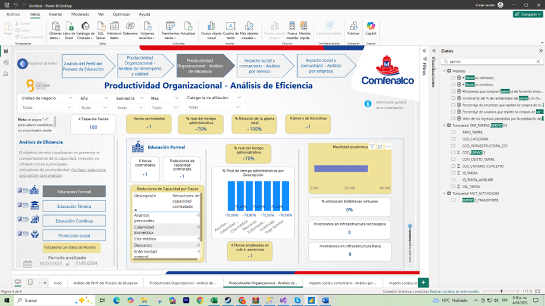
Objetivo de la Visualización:
Proporcionar una visión detallada de la eficiencia en la prestación de servicios educativos y sociales, enfocándose en aspectos como la inversión en infraestructura, la utilización de recursos (horas contratadas, bibliotecas virtuales, movilidad académica) y la capacidad disponible. Con esta vista, se busca identificar oportunidades de optimización y priorizar acciones que fortalezcan la productividad de la organización.
Estructura y Elementos Principales¶
-
Menú Superior de Navegación:
- Permite acceder a distintas secciones de Productividad Organizacional (Desempeño, Experiencia de Usuario, etc.).
- Mantiene la coherencia con las otras vistas, facilitando la exploración de múltiples perspectivas estratégicas.
-
Panel Lateral Izquierdo – Áreas de Análisis:
- Educación Formal: Incluye indicadores relacionados con programas académicos de larga duración, como carreras o bachilleratos.
- Educación Técnica: Se refiere a formaciones de carácter técnico o tecnológico, con duración y requisitos específicos.
- Educación Continua: Enfatiza cursos y diplomados de actualización o especialización para afiliados y beneficiarios.
- Protección Social: Abarca programas y servicios sociales complementarios, dirigidos a la comunidad.
-
Zona Central – Indicadores de Eficiencia:
- Horas Contratadas: Mide la cantidad de horas disponibles para la formación, facilitando el análisis de uso vs. capacidad.
- Reductores de Capacidad Contratada: Identifica los factores que disminuyen la capacidad efectiva (ausencias, mantenimientos, inhabilidades, etc.).
- Movilidad Académica: Refleja el intercambio o desplazamiento de estudiantes y docentes entre sedes o programas, promoviendo la optimización de recursos.
- % de Utilización de Bibliotecas Virtuales: Indica el grado de aprovechamiento de las plataformas digitales, vitales para la formación en entornos virtuales.
- Inversión en Infraestructura: Muestra los montos destinados a mejoras físicas y tecnológicas, comparando la inversión con el impacto en la eficiencia de los procesos.
-
Visualizaciones Clave (Gráficos y Tarjetas):
- Gráfico de Barras: Puede mostrar la relación entre horas contratadas y horas efectivamente utilizadas.
- Tarjetas de KPI: Destacan métricas esenciales como la tasa de ocupación, porcentaje de horas ociosas, número de personas que aprovechan la movilidad académica, etc.
- Tablas de Detalle: Presentan un desglose de la inversión por categoría (infraestructura, tecnología, formación del personal), permitiendo un análisis más granular.
-
Slicers y Filtros:
- Ubicados en la parte derecha o superior, posibilitan filtrar por rango de fechas, área de formación, sede o programa específico.
- La interactividad permite comparar la eficiencia entre distintas áreas (Educación Formal vs. Educación Continua, por ejemplo) o periodos de tiempo.
Funcionalidades Clave¶
-
Identificación de Brechas de Capacidad:
Al comparar las horas contratadas con las realmente utilizadas, se detectan subutilizaciones o excesos de demanda que requieran ajustes. -
Optimización de Recursos:
Analizar los reductores de capacidad contratada y la movilidad académica permite diseñar estrategias para disminuir ineficiencias y maximizar la ocupación de las instalaciones y el personal. -
Evaluación de Inversión vs. Impacto:
El monitoreo de la inversión en infraestructura y su correlación con indicadores de eficiencia (por ejemplo, % de utilización de bibliotecas virtuales) brinda evidencia para priorizar proyectos de mayor retorno. -
Comparación entre Áreas de Educación:
La posibilidad de segmentar por Educación Formal, Técnica, Continua o Protección Social ofrece una visión diferenciada y facilita la toma de decisiones específicas para cada ámbito.
Productividad Organizacional – Análisis de Eficiencia (Educación Técnica)¶
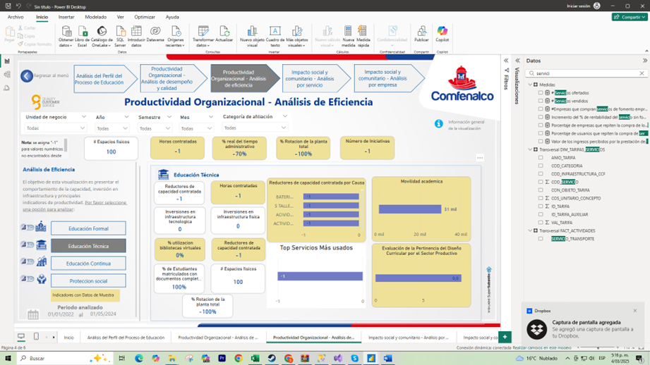
Objetivo de la Visualización:
Ofrecer un panorama detallado de la eficiencia en la gestión de la Educación Técnica, resaltando la capacidad contratada y utilizada, la movilidad académica y la frecuencia de uso de los principales servicios. El fin último es identificar oportunidades de mejora, optimizar recursos y alinear la oferta formativa con la demanda real de los usuarios.
Estructura y Elementos Principales¶
-
Menú Superior de Navegación:
- Permite alternar entre las distintas secciones de Productividad Organizacional, como Desempeño, Experiencia de Usuario y Comportamiento Financiero.
- Mantiene la coherencia con las demás vistas, asegurando un acceso rápido a diferentes perspectivas estratégicas.
-
Panel Lateral Izquierdo – Áreas de Análisis:
- Educación Formal: Dirigida a programas académicos extensos.
- Educación Técnica: Se enfoca en formaciones técnicas y tecnológicas, con énfasis en su capacidad y eficiencia.
- Educación Continua: Incluye cursos y diplomados de actualización para afiliados y beneficiarios.
- Protección Social: Abarca servicios sociales y comunitarios complementarios.
-
Zona Central – Indicadores de Eficiencia en Educación Técnica:
- Horas Contratadas vs. Horas en Uso: Muestra la proporción de horas disponibles para formación técnica frente a las horas efectivamente utilizadas, facilitando la detección de subutilización o sobrecarga.
- Reductores de Capacidad Contratada (por Turno o por Evento): Identifica factores que restan capacidad a la disponibilidad total (ausencias, mantenimientos, inhabilidades, etc.).
- Movilidad Académica: Refleja el intercambio de estudiantes o docentes entre sedes o programas, evaluando la optimización de recursos humanos y físicos.
- Top Servicios Más Usados: Presenta un listado o gráfico de los servicios con mayor demanda dentro de la Educación Técnica (laboratorios, talleres, plataformas virtuales, etc.).
- Indicadores de Utilización y Aforo: Tarjetas o gráficos que evidencian el porcentaje de ocupación de las aulas, talleres o recursos tecnológicos.
-
Visualizaciones Clave (Gráficos y Tarjetas):
- Gráfico de Barras o Líneas: Contrasta las horas contratadas con las utilizadas, destacando la brecha existente.
- Tarjetas de KPI: Subrayan las métricas esenciales, como porcentaje de uso efectivo, número de estudiantes por turno, nivel de movilidad académica, etc.
- Tablas de Detalle: Ofrecen información desglosada por curso, horario, sede o tipo de servicio utilizado.
-
Slicers y Filtros:
- Ubicados a la derecha o en la parte superior, permiten segmentar los datos por rangos de fechas, tipo de programa, sede o turno.
- La interactividad posibilita un análisis rápido y comparativo entre diferentes periodos o áreas de la Educación Técnica.
Funcionalidades Clave¶
-
Identificación de Cuellos de Botella:
Al revisar los reductores de capacidad contratada, se pueden detectar factores que obstaculizan el uso óptimo de los recursos, como altos niveles de inasistencia o tiempos muertos. -
Análisis de Movilidad Académica:
La visualización de la movilidad académica permite evaluar la eficacia de los intercambios entre sedes, fomentando un uso más racional de los recursos disponibles. -
Priorización de Recursos y Servicios:
El listado de los servicios más usados ayuda a orientar la inversión y la atención hacia aquellos que generan mayor demanda o impacto en la formación técnica. -
Optimización de la Oferta:
Comparar las horas contratadas con las realmente utilizadas facilita la planificación de cursos, el ajuste de cupos y la programación de espacios, alineando la oferta con la demanda real.
Productividad Organizacional – Análisis de Eficiencia (Educación Continua)¶
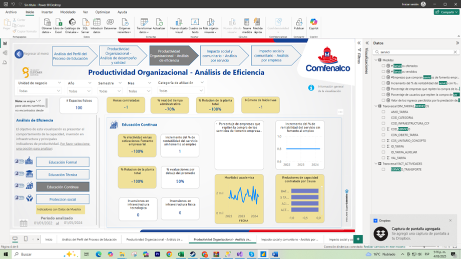
Objetivo de la Visualización:
Brindar una visión detallada de la eficiencia y uso de recursos en los programas de Educación Continua, destacando indicadores como horas contratadas, tiempo efectivo de formación, número de sesiones realizadas y asistencia de usuarios. El propósito es identificar oportunidades de mejora, optimizar la asignación de recursos y alinear la oferta formativa con la demanda real de la comunidad.
Estructura y Elementos Principales¶
-
Menú Superior de Navegación:
- Ubicado en la parte superior, permite cambiar entre los distintos módulos de Productividad Organizacional (Desempeño, Experiencia de Usuario, Comportamiento Financiero, etc.).
- Garantiza una experiencia coherente al desplazarse por las diferentes perspectivas de análisis.
-
Panel Lateral Izquierdo – Áreas de Análisis:
- Educación Formal: Información sobre programas académicos de mayor duración.
- Educación Técnica: Se refiere a formaciones de carácter técnico o tecnológico.
- Educación Continua: Enfocado en cursos y diplomados de actualización y especialización.
- Protección Social: Servicios y programas de apoyo social complementarios.
-
Zona Central – Indicadores de Eficiencia en Educación Continua:
- Horas Contratadas vs. Horas Efectivas: Compara el total de horas contratadas para la realización de los programas con las horas efectivamente empleadas en sesiones formativas.
- Uso del Tiempo y Número de Sesiones: Refleja cuántas sesiones se han llevado a cabo, su duración promedio y el porcentaje de tiempo utilizado en actividades formativas.
- Asistencia de Usuarios: Muestra el número de participantes inscritos y su asistencia real, lo que permite evaluar la aceptación y el impacto de los programas.
- Tendencia de la Demanda: Incluye un gráfico o métrica que ilustre la variación en la participación o en la oferta de cursos a lo largo del tiempo.
- Indicadores de Satisfacción o Retroalimentación (opcional): Puede mostrar, si está disponible, la percepción de los participantes acerca de la calidad y relevancia de la formación.
-
Visualizaciones Clave (Gráficos y Tarjetas):
- Tarjetas de KPI: Destacan los valores más relevantes, como la tasa de utilización de horas, el número de usuarios atendidos y la cantidad de cursos ofertados.
- Gráficos de Barras o Líneas: Ilustran la evolución de la asistencia, la demanda de cursos o el uso efectivo del tiempo en Educación Continua.
- Tablas de Detalle: Permiten revisar la información por curso, instructor, fecha o sede, profundizando en los datos.
-
Slicers y Filtros:
- Ubicados a la derecha o parte superior, posibilitan segmentar la información por rango de fechas, tipo de curso, categoría de usuario, entre otros.
- La actualización dinámica de los gráficos y tablas ayuda a comparar periodos o a focalizar el análisis en programas específicos.
Funcionalidades Clave¶
-
Detección de Ineficiencias:
Al observar la diferencia entre horas contratadas y horas efectivas, es posible detectar subutilizaciones o sobrecostos en la programación de los cursos. -
Optimización de la Oferta Formativa:
Conocer el número de sesiones realizadas y la asistencia real permite ajustar la programación de cursos a la demanda, maximizando el impacto de la Educación Continua. -
Análisis de la Evolución de la Demanda:
Mediante el seguimiento de la participación y el uso de recursos a lo largo del tiempo, se identifican tendencias de crecimiento o disminución en ciertos tipos de programas. -
Foco en la Calidad y Satisfacción (opcional):
Si se incluyen indicadores de satisfacción, se puede correlacionar la eficiencia (uso de horas, número de sesiones) con la percepción de calidad y utilidad de los cursos.
Productividad Organizacional – Análisis de Eficiencia (Protección Social)¶
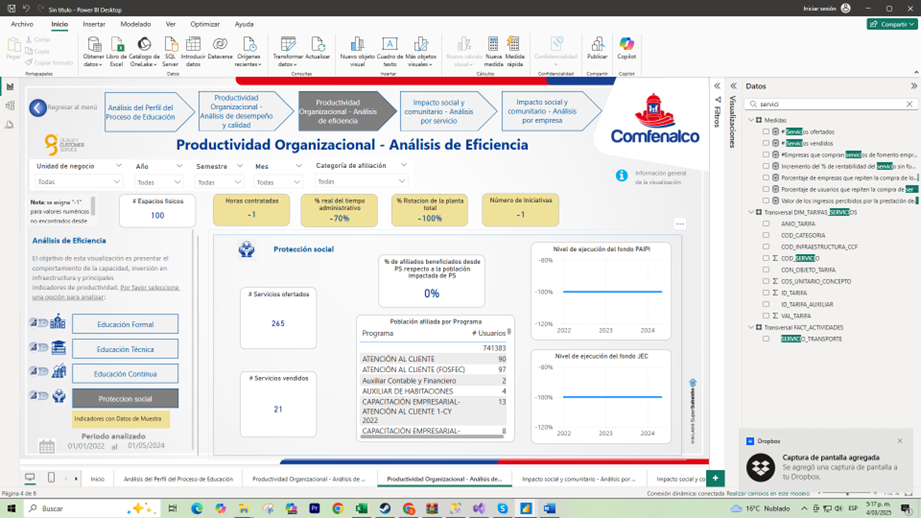
Objetivo de la Visualización:
Proporcionar una visión enfocada en la eficiencia de los programas y servicios de Protección Social, abarcando la cobertura de beneficiarios, el uso de recursos y la capacidad instalada en las diferentes sedes. El fin es identificar oportunidades de mejora, optimizar la asignación de fondos e infraestructura, y asegurar que los servicios sociales respondan de manera efectiva a las necesidades de la comunidad.
Estructura y Elementos Principales¶
-
Menú Superior de Navegación:
- Ubicado en la parte superior, permite desplazarse por las distintas secciones de Productividad Organizacional (Desempeño, Experiencia de Usuario, Comportamiento Financiero, etc.).
- Mantiene la coherencia con las otras vistas, facilitando el acceso a múltiples perspectivas estratégicas.
-
Panel Lateral Izquierdo – Áreas de Análisis:
- Educación Formal: Sección destinada a los programas académicos tradicionales.
- Educación Técnica: Centrada en la formación técnica o tecnológica.
- Educación Continua: Cubre cursos de actualización y diplomados.
- Protección Social: Focaliza la presente vista, que aborda servicios sociales y comunitarios.
-
Zona Central – Indicadores de Eficiencia en Protección Social:
- Número de Servicios: Refleja la variedad o cantidad de servicios de protección social ofrecidos (por ejemplo, asistencia alimentaria, atención al adulto mayor, etc.).
- Número de Sedes: Indica la infraestructura disponible para prestar dichos servicios, permitiendo evaluar la distribución geográfica o por comunidad.
- Número de Beneficiarios: Muestra cuántas personas han sido atendidas, ayudando a medir el alcance y la efectividad de los programas sociales.
- Proyección de Aforo o Capacidad Instalada: Estima la capacidad máxima de atención que las sedes pueden ofrecer, comparándola con la demanda real para detectar subutilización o saturación.
- Tabla de Detalle por Programa o Categoría: Desglosa la información de cada servicio o programa (nombre, cobertura, tipo de población atendida), brindando un análisis granular.
-
Visualizaciones Clave (Gráficos y Tarjetas):
- Tarjetas de KPI: Destacan los valores principales (número de servicios, sedes y beneficiarios), facilitando la interpretación rápida de los resultados.
- Gráficos de Barras o Líneas: Pueden ilustrar la evolución en la prestación de servicios a lo largo del tiempo o comparar la cobertura entre sedes.
- Tablas Interactivas: Muestran datos detallados por programa, fecha, categoría o sede, permitiendo filtrar y profundizar en información específica.
-
Slicers y Filtros:
- Ubicados a la derecha o en la parte superior, permiten segmentar la información por rangos de fechas, tipo de servicio, población objetivo, sede, etc.
- La interactividad posibilita un análisis más preciso, ajustando la visualización a las necesidades de cada área o usuario.
Funcionalidades Clave¶
-
Monitoreo de Cobertura y Capacidad:
Al comparar la proyección de aforo con el número de beneficiarios atendidos, se identifican posibles brechas o excedentes de capacidad. -
Priorización de Recursos:
Conociendo el número de servicios y sedes, así como la demanda efectiva, es posible asignar mejor el personal, el presupuesto y los espacios físicos a los programas con mayor impacto. -
Análisis por Programa o Categoría:
La tabla de detalle permite evaluar cuáles programas son más utilizados y qué población están atendiendo, facilitando la toma de decisiones basada en datos concretos. -
Evolución Histórica y Comparativa:
Gráficos que muestren la evolución del número de beneficiarios o la apertura de nuevas sedes en el tiempo ayudan a entender tendencias y planificar expansiones o ajustes.
Impacto Social y Comunitario – Análisis por Servicio¶
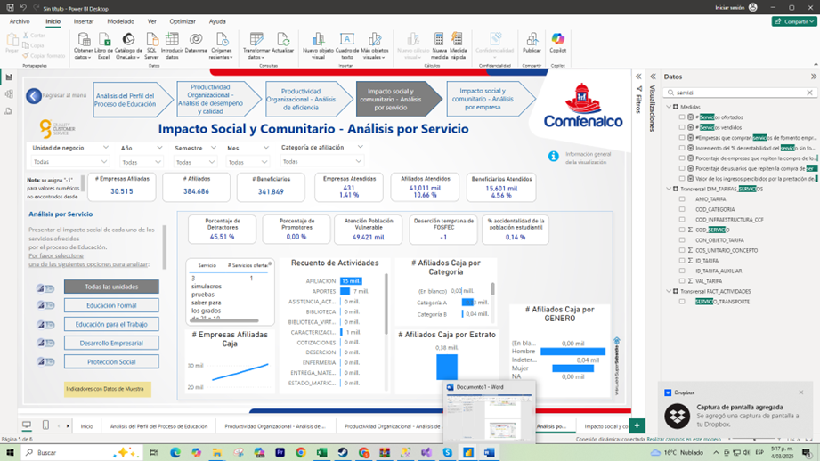
Objetivo de la Visualización:
Presentar de manera detallada el impacto social y comunitario de los distintos servicios ofrecidos, destacando la atención a la población vulnerable, el nivel de satisfacción (porcentaje de promotores y detractores), y la distribución de afiliados según categoría y género. Además, se incluye información sobre empresas atendidas, estratos socioeconómicos y recuento de actividades realizadas, brindando una perspectiva amplia de la cobertura e impacto de cada servicio en la comunidad.
Estructura y Elementos Principales¶
-
Menú Superior de Navegación:
- Ubicado en la parte superior, permite desplazarse entre diversos análisis estratégicos (por ejemplo, Análisis por Empresa, Productividad Organizacional, Experiencia de Usuario).
- Mantiene la coherencia con otras vistas, facilitando un cambio fluido de perspectiva.
-
Panel Lateral Izquierdo – Áreas de Análisis:
- Educación Formal: Enfocado en la formación académica de larga duración.
- Educación para el Trabajo: Muestra la oferta de programas de formación técnica o capacitación laboral.
- Desarrollo Empresarial: Dirigido a servicios de acompañamiento y consultoría para empresas.
- Protección Social: Incluye programas y servicios de apoyo social para poblaciones vulnerables.
-
Zona Central – Indicadores Clave de Impacto Social:
- Porcentaje de Detractores y Promotores: Refleja la satisfacción de los usuarios con los servicios, medido por un índice de recomendación (NPS o similar).
- Atención a Población Vulnerable: Indica cuántas personas de grupos en condición de vulnerabilidad han sido atendidas, destacando el alcance inclusivo de los servicios.
- Afiliados Atendidos y Empresas Atendidas: Muestra el volumen de usuarios y empresas que han accedido a los programas, permitiendo medir la cobertura efectiva.
- Recuento de Actividades Realizadas: Registra el total de eventos, talleres o jornadas de servicio llevadas a cabo, ofreciendo una idea de la intensidad de las intervenciones.
- Afiliados (Caja) por Estrato y por Género: Desglosa la distribución socioeconómica y de género de los afiliados, aportando una visión de la equidad en la prestación de servicios.
-
Visualizaciones Clave (Gráficos y Tablas):
- Gráficos de Barras / Pasteles: Comparan los porcentajes de promotores y detractores, o muestran la proporción de afiliados según estrato o género.
- Tarjetas de KPI: Destacan valores como el número de empresas atendidas, la atención a población vulnerable o el recuento total de actividades.
- Tablas Dinámicas: Permiten profundizar en datos específicos, como la clasificación de actividades por tipo de servicio o el detalle de afiliados atendidos por categoría.
-
Slicers y Filtros:
- Ubicados en la parte derecha o superior, permiten filtrar la información por rango de fechas, tipo de servicio, categoría de beneficiario, entre otros.
- Actualizan automáticamente las visualizaciones, facilitando el análisis focalizado y comparativo.
Funcionalidades Clave¶
-
Medición de Satisfacción y Recomendación:
El porcentaje de promotores y detractores brinda una lectura rápida de la aceptación de los servicios y las áreas donde podría requerirse mejora. -
Enfoque en Inclusión y Equidad:
Al mostrar la atención a población vulnerable, la distribución por género y estrato socioeconómico, la vista promueve la adopción de estrategias de inclusión social. -
Seguimiento de Actividades y Cobertura:
El recuento de actividades y la cantidad de afiliados/empresas atendidas ofrecen un indicador del volumen de operaciones y su alcance. -
Segmentación Interactiva:
La posibilidad de filtrar por servicio, estrato o género permite analizar la efectividad y relevancia de las acciones en grupos poblacionales específicos.
Impacto Social y Comunitario – Análisis por Empresa¶
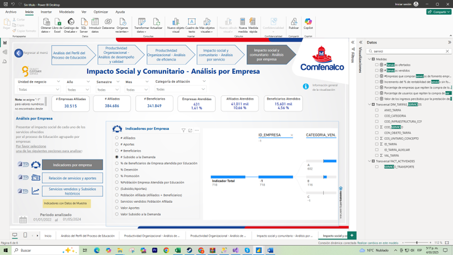
Objetivo de la Visualización:
Brindar una perspectiva enfocada en las empresas que participan en los servicios ofrecidos por la organización, analizando indicadores clave como la relación de aportes, la compra de servicios y el acceso a subsidios. Con esta vista, se busca identificar patrones de comportamiento empresarial, medir el nivel de involucramiento en programas sociales y evaluar el impacto de las alianzas entre la organización y el sector productivo.
Estructura y Elementos Principales¶
-
Menú Superior de Navegación:
- Ubicado en la parte superior, permite desplazarse entre diferentes análisis estratégicos (por ejemplo, Análisis por Servicio, Productividad Organizacional, Experiencia de Usuario).
- Facilita la transición a otras perspectivas sin perder el contexto global del impacto social y comunitario.
-
Panel Lateral Izquierdo – Opciones de Análisis:
- Indicadores por Empresa: Presenta datos consolidados de cada empresa, como aportes realizados y número de servicios utilizados.
- Relación de Servicios y Aportes: Permite visualizar qué servicios han sido contratados por las empresas y cómo se relacionan con los aportes efectuados.
- Servicios Vendidos y Subsidios: Muestra la cantidad de servicios vendidos a cada empresa y los subsidios aplicados, ofreciendo un panorama de la inversión social y el retorno en términos de cobertura.
-
Zona Central – Indicadores Clave por Empresa:
- Número de Empresas Atendidas: Refleja cuántas organizaciones están siendo impactadas por los servicios.
- Aportes a la Demanda: Indica la contribución económica de las empresas en el proceso educativo o social, relacionándola con la cantidad de beneficiarios o servicios financiados.
- Valor de Subsidios: Muestra los montos de subsidios asignados a cada empresa, evidenciando el apoyo que reciben para la formación o asistencia de sus afiliados.
- Indicador Total (Gráfico de Barras o Columnas): Ordena a las empresas según una métrica consolidada (p. ej., aportes totales, servicios contratados, índice de impacto), facilitando la comparación entre ellas.
-
Visualizaciones Clave (Gráficos y Tablas):
- Gráfico Comparativo por Empresa: Permite ver de forma rápida las empresas con mayor inversión, mayor cantidad de servicios comprados o mayor acceso a subsidios.
- Tabla de Detalle: Desglosa la información por tipo de servicio, categoría de aportes o periodo de análisis, permitiendo un estudio más profundo de cada caso.
-
Slicers y Filtros:
- Ubicados en la parte derecha o superior, permiten filtrar por periodo de tiempo, sector empresarial, tamaño de la empresa o cualquier otra variable relevante.
- Al seleccionar criterios específicos, las visualizaciones se actualizan de forma dinámica, posibilitando análisis comparativos y focalizados.
Funcionalidades Clave¶
-
Análisis de Contribución y Beneficio:
Comparar los aportes de cada empresa con los servicios que reciben o subsidios que aprovechan, permite entender la balanza de inversión social y retorno en beneficios. -
Segmentación por Sector o Tamaño de Empresa:
Filtrar la información por tipo de industria, número de empleados o facturación ayuda a identificar patrones de participación y potenciales áreas de mejora o expansión. -
Identificación de Oportunidades de Alianza:
Conocer qué empresas demandan más servicios o aportan más recursos permite enfocar esfuerzos de colaboración y diseñar propuestas de valor que fortalezcan la relación institucional. -
Monitoreo de Tendencias y Cambios:
La comparación histórica de indicadores muestra cómo evoluciona la participación empresarial en los programas, facilitando la medición de impacto a lo largo del tiempo.
Impacto Social y Comunitario – Análisis por Empresa (Relación de Servicios y Aportes)¶
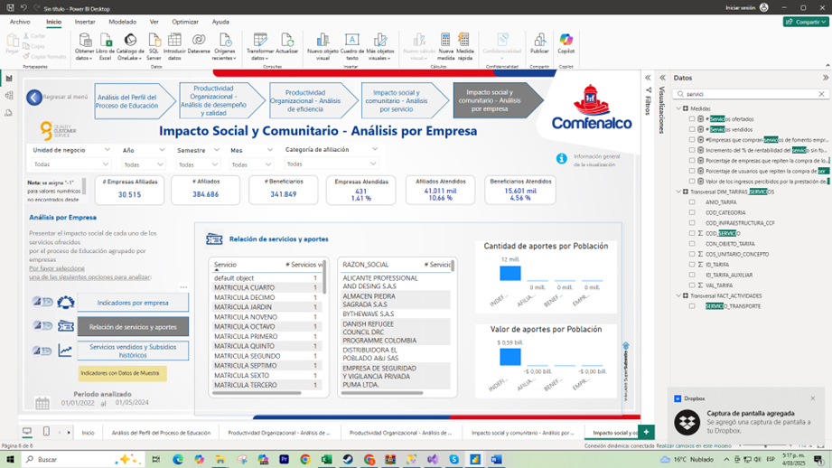
Objetivo de la Visualización:
Proporcionar un panorama detallado de la relación entre los servicios ofrecidos y los aportes de las empresas, evidenciando cuántos y cuáles servicios han sido adquiridos o subsidiados por cada organización. Además, se incluye la distribución de aportes por tipo de población, brindando una perspectiva clara del impacto y la cobertura alcanzada a través de los programas ofrecidos.
Estructura y Elementos Principales¶
-
Menú Superior de Navegación:
- Permite moverse entre distintos análisis estratégicos dentro de la categoría de Impacto Social y Comunitario (p. ej., Análisis por Servicio, Productividad Organizacional, etc.).
- Ofrece una experiencia coherente, facilitando el cambio de vista sin perder el contexto general de los datos.
-
Panel Lateral Izquierdo – Opciones de Análisis:
- Indicadores por Empresa: Vista enfocada en datos consolidados de cada empresa (aportes, número de servicios utilizados, subsidios, etc.).
- Relación de Servicios y Aportes: Vista actual, centrada en la correspondencia entre los aportes realizados por las empresas y los servicios adquiridos o subsidiados.
- Servicios Vendidos y Subsidios: Muestra el detalle de cuántos servicios han sido vendidos a cada empresa y la aplicación de subsidios históricos.
-
Zona Central – Relación de Servicios y Aportes:
- Tabla Principal (Servicios vs. Empresa): Lista o tabla que detalla cada servicio (por ejemplo, matrícula de cursos, asesorías, programas sociales) y los aportes realizados por las empresas.
- Cantidad de Aportes por Población (Gráfico de Barras o Tartas): Refleja cuántos aportes se han destinado a diferentes segmentos poblacionales (niñez, adulto mayor, población vulnerable, etc.), evidenciando el alcance social de las contribuciones.
- Indicadores Globales: Muestran datos agregados, como el número total de aportes, el valor económico asociado y la cantidad de servicios ofrecidos o adquiridos.
-
Visualizaciones Clave (Gráficos y Tablas):
- Relación de Servicios y Aportes: Puede ser un gráfico que cruce la información de servicios vs. aportes, indicando cuántas empresas han participado en cada servicio o el monto aportado.
- Cantidad de Aportes por Población: Destaca de forma visual el foco de las contribuciones, revelando si están orientadas mayoritariamente a una población específica o si están equilibradas entre distintos grupos.
-
Slicers y Filtros:
- Ubicados a la derecha o en la parte superior, permiten filtrar por rango de fechas, tipo de servicio, categoría de empresa, población beneficiada, etc.
- Actualizan de forma dinámica las tablas y gráficos, brindando la posibilidad de hacer análisis comparativos y segmentados (por ejemplo, ver la relación de servicios y aportes de un sector industrial específico).
Funcionalidades Clave¶
-
Visión Integral de la Contribución Empresarial:
Combina en un solo espacio los servicios utilizados y los aportes realizados, permitiendo entender el grado de involucramiento de cada empresa en los programas sociales. -
Análisis de Cobertura por Población:
El desglose de aportes por población facilita la identificación de los colectivos más beneficiados, ayudando a alinear esfuerzos con los objetivos de responsabilidad social. -
Comparación Interactiva:
La interacción con los filtros posibilita contrastar aportes en distintos periodos o entre diferentes tipos de empresas, dando soporte a la toma de decisiones basada en datos. -
Detección de Oportunidades de Expansión o Mejora:
Al observar qué servicios reciben mayores aportes y cuáles tienen menor participación, se pueden replantear estrategias de promoción, subsidio o colaboración con empresas.
Impacto Social y Comunitario – Análisis por Empresa (Servicios vendidos y subsidios históricos)¶
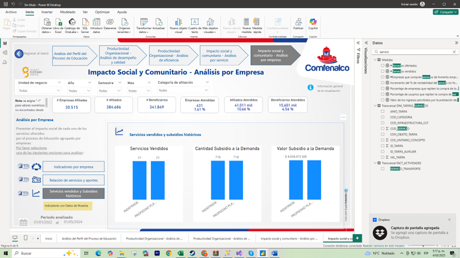
Objetivo de la Visualización:
Brindar una perspectiva histórica de los servicios vendidos a cada empresa y de los subsidios otorgados en el tiempo. Este enfoque permite evaluar la evolución de la relación comercial y social con las empresas, identificar patrones de demanda y cuantificar el apoyo brindado mediante subsidios, todo con el fin de optimizar las estrategias de vinculación y la gestión de recursos.
Estructura y Elementos Principales¶
-
Menú Superior de Navegación:
- Permite cambiar entre las secciones de Impacto Social y Comunitario (por ejemplo, Análisis por Servicio, Análisis por Empresa, etc.).
- Mantiene la coherencia con otras vistas, facilitando la transición sin perder el contexto global.
-
Panel Lateral Izquierdo – Opciones de Análisis:
- Indicadores por Empresa: Ofrece datos consolidados de cada empresa (aportes, servicios adquiridos, etc.).
- Relación de Servicios y Aportes: Muestra cómo se conectan los aportes de las empresas con los servicios utilizados.
- Servicios vendidos y Subsidios Históricos: Vista actual, enfocada en el volumen de servicios vendidos a lo largo del tiempo y la evolución de los subsidios otorgados.
-
Zona Central – Indicadores Clave de Servicios y Subsidios:
- Servicios Vendidos (Histórico): Presenta la cantidad de servicios adquiridos por las empresas en distintos periodos (mes, trimestre, año), permitiendo observar tendencias de compra.
- Cantidad Subsidiada a la Demanda: Muestra cuántos servicios o cupos han sido subsidiados en cada periodo, reflejando el apoyo brindado a empresas y afiliados.
- Valor Subsidiado a la Demanda: Indica el monto económico total invertido en subsidios, facilitando el análisis del impacto financiero y social.
- Gráficos Comparativos: Pueden presentarse en barras o líneas, contrastando la evolución de servicios vendidos con la de subsidios en el tiempo.
-
Visualizaciones Clave (Gráficos y Tablas):
- Gráficos de Tendencia: Ilustran la evolución de servicios vendidos y subsidios en el tiempo, permitiendo identificar picos o caídas significativas.
- Tarjetas de KPI: Resumen las métricas más importantes (p. ej., total de servicios vendidos en el último año, valor acumulado de subsidios).
- Tabla Histórica Detallada: Desglosa la información por empresa, rango de fechas y tipo de servicio, brindando un análisis granular.
-
Slicers y Filtros:
- Ubicados en la parte derecha o superior, permiten filtrar por período, tipo de servicio, categoría de empresa u otras variables relevantes.
- La actualización dinámica de los gráficos y tablas facilita el análisis focalizado (por ejemplo, ver los subsidios de un solo tipo de servicio o de un sector empresarial específico).
Funcionalidades Clave¶
-
Análisis de Tendencias Históricas:
Comparar servicios vendidos y subsidios a lo largo del tiempo ayuda a entender el comportamiento de la demanda y la efectividad de los apoyos económicos. -
Enfoque en el Retorno Social y Comercial:
Al correlacionar la evolución de los servicios vendidos con los subsidios otorgados, se puede estimar el equilibrio entre ingresos y aportes sociales. -
Segmentación Interactiva:
Los filtros permiten ver la evolución de la relación con una empresa específica, un grupo de empresas o un tipo de servicio, apoyando decisiones más precisas. -
Identificación de Patrones de Compra:
Detectar temporadas o periodos en los que se incrementa la venta de servicios o la solicitud de subsidios ayuda a planificar estrategias de promoción y asignación de recursos.